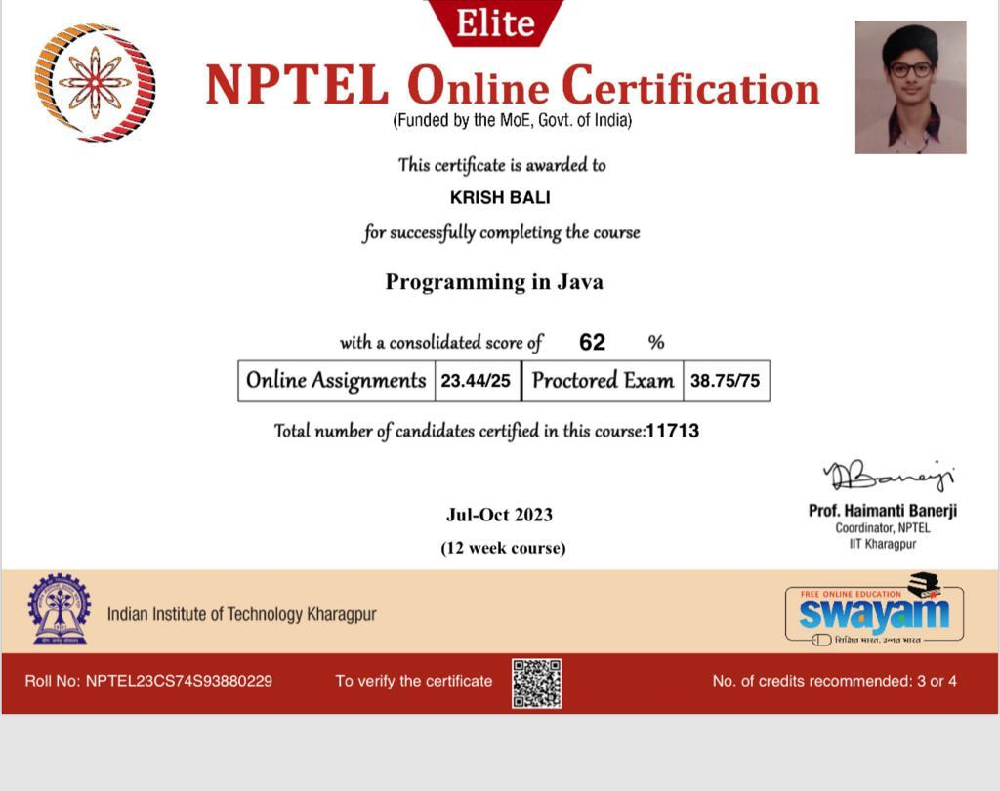
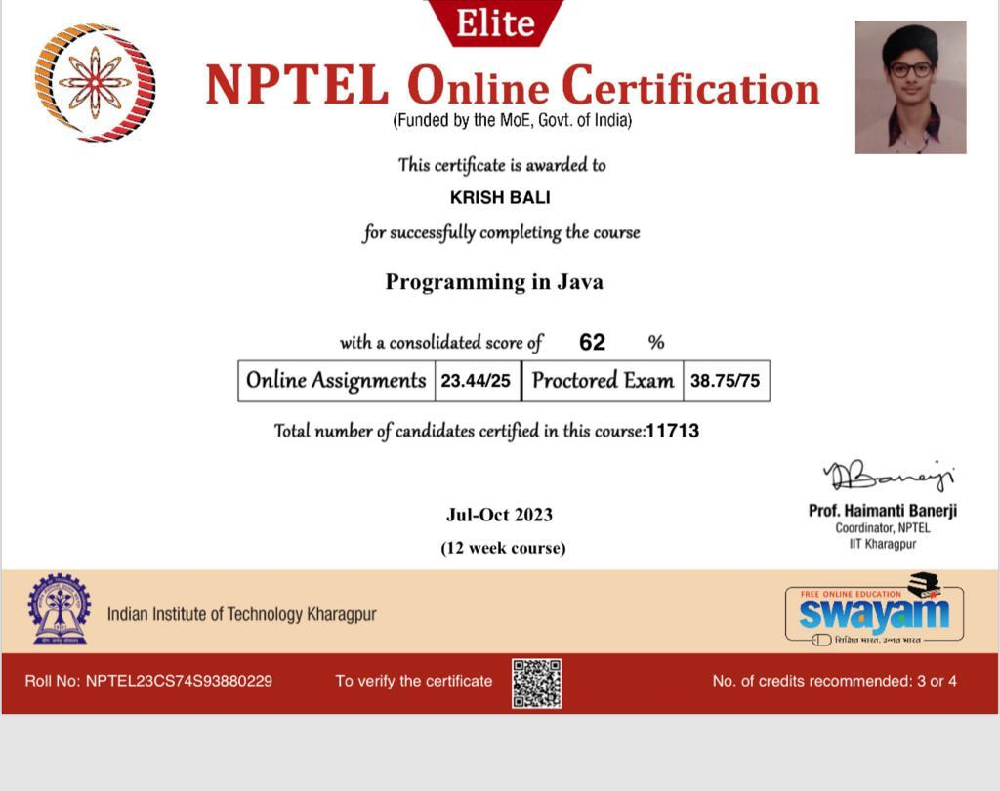

About Me
Hello, I' m Krish Bali, a second-year student pursuing a Bachelor ' s degree in Computer Science and Engineering from SRM University Chennai. Enthusiastic about technology,I did my schooling from Greenland convent school Ludhiana,Punaja. I find joy in exploring the vast realm of possibilities it offers.As I progress in my academic journey, I aspire to contribute meaningfully to the field of Computer Science. I aim to bridge the gap between theoretical knowledge and practical applications, applying my skills to real-world problems.
Currently,I am looking forward working for a Web Developement club which is a great place for research work and meeting like minded people who share the same interests of helpping others and improving and learning something extraordinary everday,further expanding my knowledge and passion for web world my interest in the field of web designing has driven me to gain hands-on experience in UI UX, graphics and front end development beyond my academic and my technical skills,i have a diverse set of hobbies that help me strike a balace between work and leisure.I enjoy being creative which i express through playing instrument and solving cube.I have keen interest in sports which help me to get calm and be more produtive both mentally and physically.


 
